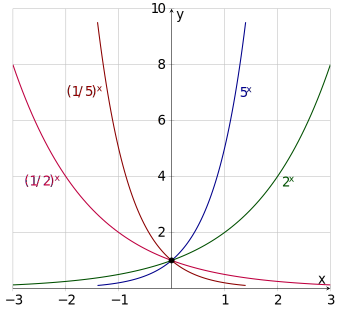

Exponential Function with base \(a\)

Comparison of Bases
Problem 1: Suppose you deposit $1 at a bank that offers an APR (annual percentage rate) of 100%. Find the balance after 1 year if the interest is compounded:
Annually (\(n=1\)): \[1+1 = \$2.00\]
Semiannually (\(n=2\)): \[1 \left(1 + \frac{1}{2}\right) \left(1 + \frac{1}{2}\right)=\left(1 + \frac{1}{2}\right)^2 = (1.5)^2 = \$2.25\]
Quarterly (\(n=4\)): \[1 \left(1 + \frac{1}{4}\right)^4 = (1.25)^4 \approx \$2.44\]
Monthly (\(n=12\)): \[1 \left(1 + \frac{1}{12}\right)^{12} \approx \$2.61\]
General Compound Interest Formula \[A(t) = P \left(1 + \frac{r}{n}\right)^{nt}\]
\(A(t)\): Amount after \(t\) years
\(P\): Principal (initial investment)
\(r\): Annual interest rate (in decimal form)
\(n\): Number of compounding periods per year
\(t\): Number of years
The exponential function is in the form \(f(x) = a^x\), where \(a > 0\) and \(a \neq 1\).
Domain: \((-\infty, \infty)\)
Range: \((0, \infty)\)
\(x\)-intercept: None
\(y\)-intercept: \((0, 1)\)
Horizontal Asymptote (H.A.): \(y = 0\)
Vertical Asymptote (V.A.): None
Exponential Function with base \(a\)
Problem 2: Use the graph of \(g(x) = 2^x\) to sketch the graph of \(f(x) = 4 - 2^{x-3}\). State the domain, range, and asymptote.
Steps:
Shift right by 3.
Reflect over the \(x\)-axis.
Shift up by 4.
Transformation of \(2^x\) to \(4-2^{x-3}\)
Calculations:
y-intercept (set \(x=0\)): \(4 - 2^{0-3} = 4 - 2^{-3} = 4 - \frac{1}{8} = \frac{31}{8}\). Point: \((0, \frac{31}{8})\).
x-intercept (set \(y=0\)): \[\begin{align*} 4 - 2^{x-3} &= 0 \\ 2^{x-3} &= 4 \\ 2^{x-3} &= 2^2 \\ x - 3 &= 2 \implies x = 5 \quad \text{Point: } (5,0) \end{align*}\]
Properties: Domain: \((-\infty, \infty)\), Range: \((-\infty, 4)\), H.A.: \(y = 4\).
Problem 3: Use the graph of \(g(x) = \left(\frac{1}{3}\right)^x\) to sketch \(f(x) = \left(\frac{1}{3}\right)^{x+1} - 9\).
Steps:
Shift left by 1.
Shift down by 9.
![Graph titled 'Transformation of (1/3)^x to (1/3)^{x+1}-9' showing the step-by-step evolution of an exponential decay function. 1. The base curve g(x)=(1/3)^x is dashed black, passing through (0,1). 2. A dotted blue curve shows a horizontal shift 1 unit to the left. 3. The final solid dark red curve, f(x)=(1/3)^{x+1}-9, is shifted vertically down 9 units. This final curve is decreasing, approaches a horizontal asymptote at y=-9, and passes through the marked points (-1,-8) and the y-intercept (0, -8 2/3)](images/fig-transformation-one-third.svg)
Transformation of \((1/3)^x\) to \((1/3)^{x+1}-9\)
Key Point Tracking: \((0,1)
\xrightarrow{\text{Left 1}} (-1, 1) \xrightarrow{\text{Down 9}} (-1,
-8)\).
Properties: Domain: \((-\infty, \infty)\), Range: \((-9, \infty)\), H.A.: \(y = -9\).
Problem 4: Paper Folding Experiment. A standard sheet of paper is about 0.1 mm thick. If you fold it in half repeatedly:
To reach the Moon (384,400 km): Requires approx 42 folds: \(0.1(10^{-6})(2)^{42}\approx 439,805\) km
To reach Mars (54,600,000 km): Requires approx 49 folds: \(0.1(10^{-6})(2)^{49}\approx 56,294,995\) km
Conclusion: Exponential functions grow very fast!
Problem 5: Referencing Problem 1, if we compound more frequently (as \(n \to \infty\)): \[\left(1 + \frac{1}{n}\right)^n \to 2.71828182845904523536...\] This irrational number is called Euler’s number and denoted by \(e\).
Continuous Compounding Formula \[A(t) = Pe^{rt}\] Where:
\(P\): Principal (initial investment)
\(r\): Annual interest rate
\(t\): Time in years
Natural exponential function \(f(x) = e^x\)
\(e^{kx}\) represents exponential growth (if \(k>0\)).
\(e^{-kx}\) represents exponential decay (if \(k>0\)).
Problem 6: Use the graph of \(g(x) = e^x\) to sketch \(f(x) = e^{x-3} + 5\).
Steps:
Shift right by 3.
Shift up by 5.
Key Point: \((0,1) \to (3, 1) \to
(3, 6)\).
Properties: Domain: \((-\infty,
\infty)\), Range: \((5,
\infty)\), H.A.: \(y = 5\).
Transformation of \(e^x\) to \(e^{x-3}+5\)
Problem 7: $10,000 is invested at an interest rate of 3% per year. Find the value after 10 years if compounded:
Monthly: \[A(10) = 10,000 \left(1 + \frac{0.03}{12}\right)^{12 \times 10} \approx \mathbf{\$13,493.54}\]
Continuously: \[A(10) = 10,000 e^{0.03 \times 10} = 10,000 e^{0.3} \approx \mathbf{\$13,498.59}\]
Problem 8 (Drug Decay): A drug is administered to a patient. The number of milligrams remaining in the bloodstream after \(t\) hours is \(D(t) = 50e^{-0.2t}\).
How many mg are in the bloodstream when \(t=0\)? \[D(0) = 50 e^{-0.2(0)} = 50 e^0 = 50(1) = \mathbf{50 \text{ mg}}\]
How many mg remain after 3 hours? \[D(3) = 50 e^{-0.2(3)} = 50 e^{-0.6} \approx \mathbf{27.44 \text{ mg}}\]